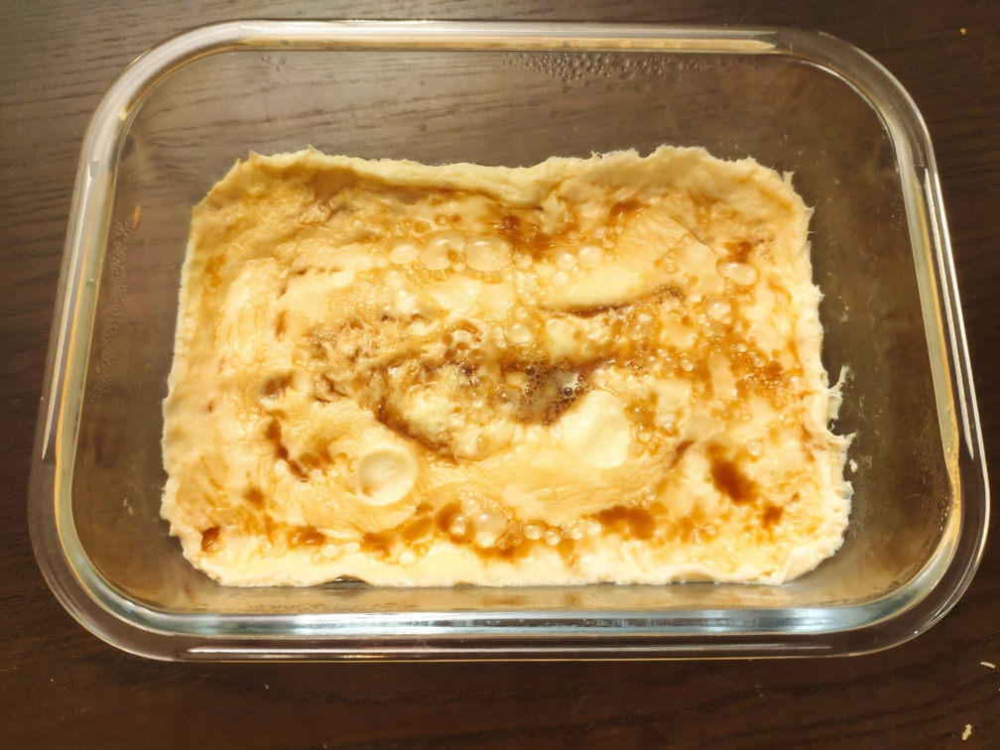

微波炉鸡蛋羹的做法
 微波炉鸡蛋羹是一个简单易制作的菜。非常适合夜间突然饿了的时候充当夜宵，快捷简单。
预估烹饪难度：★★
必备原料和工具
每次制作可以最多制作三份。超过 3 人需要的情况下，需要分多次制作。
- 鸡蛋
- 水
计算
每次制作前需要确定计划做几份。一份正好够 1 个人食用
总量：
- 鸡蛋 2 个 * 份数
- 水 200ml * 份数
- 虾皮 10 个 * 份数（可选）
- 葱 5g *份数（可选）
- 盐 3g * 份数
- 酱油（可选）
- 芝麻油（香油） 1ml（可选）
操作
- 将鸡蛋打入可使用微波炉加热的陶瓷碗中，使用筷子将其打散。
- 加入水和盐，搅拌均匀。
- 将虾皮放入碗中，搅拌均匀，保证所有虾皮不会堆积在一起。
- 葱切碎至边长 0.6±3mm 状，放入碗中搅拌均匀。
- 将此碗及内容物放入微波炉中，容器表面覆盖保鲜膜或以可微波瓷盘加盖（注意：不得密封，必须留有涨缩量）加热 2 分钟(500W)。
- 小心地取下保鲜膜或其他覆盖物，然后继续加热 2 分钟。
- 若微波炉不带旋转式加热盘，将碗缓慢的水平旋转 180 度，以确保内容物加热均匀。
- 放入芝麻油。
- 小心地从微波炉中拿出碗（真的很烫）。
- 如果选择放入酱油，则确保酱油在鸡蛋羹表面流动后能以最薄的形式沾满鸡蛋羹表面即可。
- 开心的享受鸡蛋羹
附加内容
鸡蛋 1 个约为 50±5g。若使用其他品种蛋品可按比例增减水量。
一定要确保将鸡蛋打散，否则可能会发生轻度鸡蛋爆炸。
鸡蛋和水不能超过碗容量的 2/3，否则可能发生溢出。
如果您遵循本指南的制作流程而发现有问题或可以改进的流程，请提出 Issue 或 Pull request 。